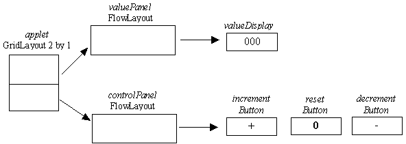

Click Counter Presentation
- layout management

The intermediate Panels, valuePanel and controlPanel, are needed to provide and maintain the required physical appearance. They both have a default FlowLayout management policy which lays out its instance children in a right to left manner, centering within the available space.
The applet Panel has a 2 row by 1 column GridLayout policy established during construction. Its instance children are then laid out in a left-right, top-down manner.